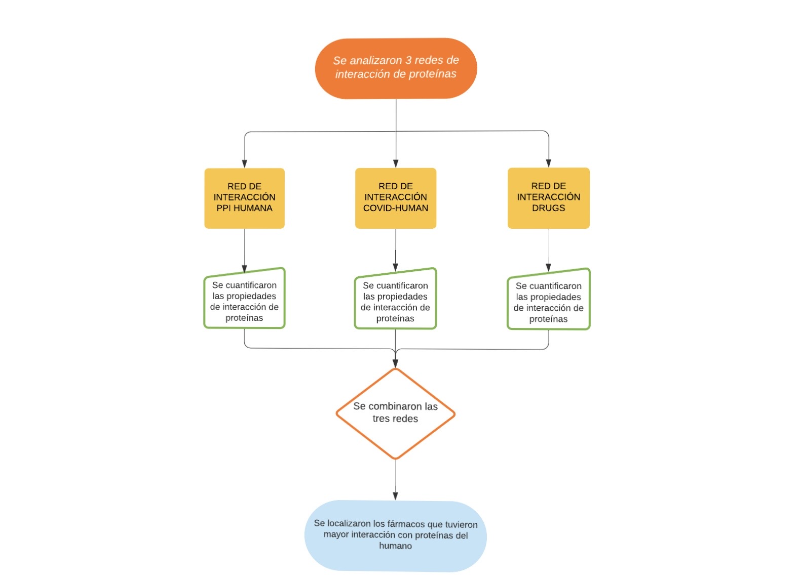
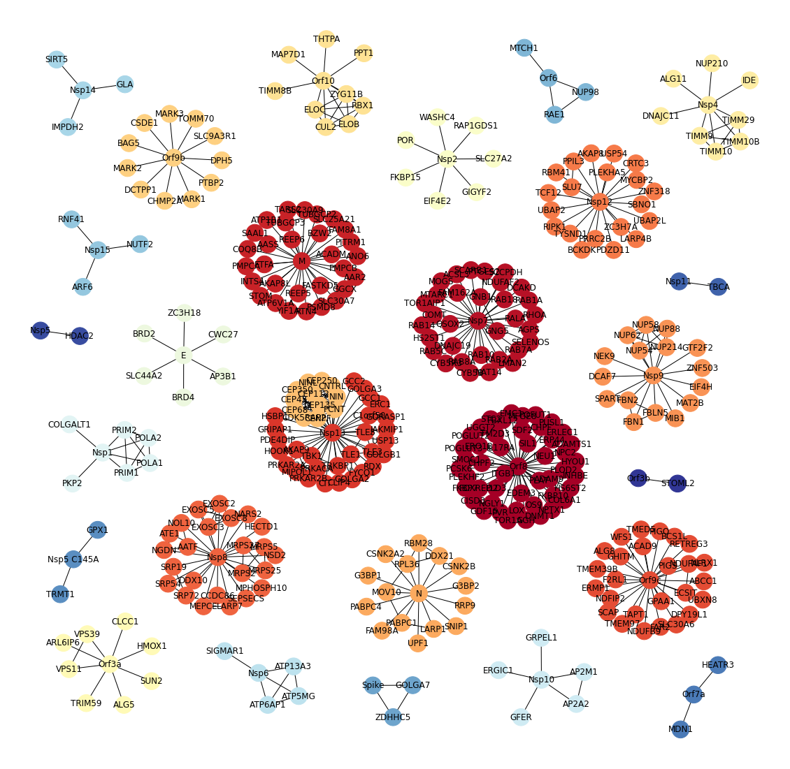
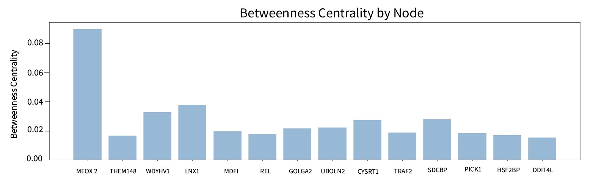
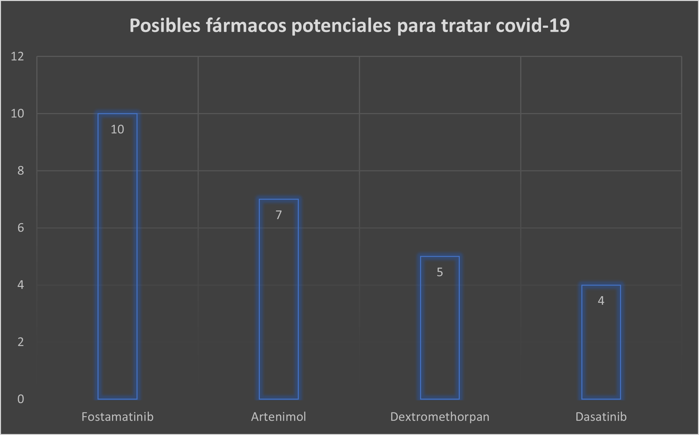

Conocer las interacciones que hay entre biomoléculas sirven como base para encontrar relaciones que muchas veces, de manera directa, no podríamos encontrar. Siendo que, a través de la teoría de redes, se puede analizar de manera matemática, un proceso representado por un grafo, permitiendo además, encontrar patrones entre redes de interacción.
Para la situacuón actual que enfrentamos todos, la pandemia causada por SARS-COV2, esta ha sido una herramienta bastante útil al intentar descrifrar los enigmas de este tan aclamado coronavirus, los cuales descubriremos juntos.
Introducción
Para empezar...
Proteínas y virus, ¿qué tienen de especial?
Las proteínas son macromoléculas complejas que desempeñan funciones celulares cruciales, y están sujetas a cambios físicos que modifican el ciclo de vida de los organismos en los que residen.
En cambio, los virus son elementos genéticos encapsulados en una vesícula de proteínas, que pueden replicarse independientemente dentro de una célula huésped.
La relación entre estas biomoléculas y estos agentes infecciosos microscópicos, radica en el proceso de colonización de la célula, debido a que el virus detecta ciertas proteínas blanco para identificar qué célula infectar.
Este fenómeno ha sido objeto de estudio debido a la actual pandemia causada por el SARS-COV-2, los investigadores han identificado proteínas que parecen ser objetivo de este coronavirus.
Razón por la que en este proyecto se analizaron diversas redes de proteínas del virus en cuestión y otras más del ser humano para poder visualizar las interacciones entre estas.
¿Nuevo en teoría de redes?
Te recomendamos ver este video corto para volverte experto en el tema
METODOLOGÍA
¿Y cómo lo hicimos?

Si te interesa saber más sobre cómo se obtuvieron los resultados, puedes ver
el código que se utilizó para obtener los datos
Para el caso de COVID-19, las redes biológicas hacen posible analizar las relaciones entre proteínas de SARS-COV-2 y las de humanos, que de manera experimental se han detectado, dando lugar a la construcción de redes de interacción proteína-proteína (PPI), que describen los procesos internos que están pasando en la célula cuando una es infectada por el virus. Esta red de interacción entre proteínas humanas y de SARS-COV-2, puede servir como base para unir con las redes de interacción como la del proteoma humano y redes de proteínas humanas sensibles a ciertos fármacos, dando lugar a encontrar posibles blancos terapéuticos que tal vez con un estudio no se ve pero que al conjuntar con otros se vuelve visible.

Red de Interacción PPI Humana

La red de interacciones entre proteoma humano construido por Luck et al.abarca 9096 proteínas y tiene 64006 interacciones entre ellas.
De estas 9096, la proteína del humano con más interacciones es la MEOX2, con un total de 642 interacciones y cuya función es un factor de transcripción mesodérmico que actúa como regulador de la proliferación de células vasculares.La segunda proteína es CYSRT1 que aun requiere caracterización para conocer sus funciones celulares.
La tercera es GOLGA2 una proteína relacionada con el aparato de Golgi y que se postula tiene juega un papel en el apilamiento de cisternas de Golgi y en el transporte vesicular.
El resto de las proteínas en el Top15 de proteínas con más interacción tienen funciones diversas, que abarcan factores de transcripción , proteínas transductoras de señales, formadoras del citoesqueleto, etc.
Realizar un histograma de estas 15 proteínas con más interacciones nos muestra una distribución con valor máximo en en 339 interacciones y que corresponde a los nodos de las proteínas NOTCH2NL, NBPF19 . No se muestra en este histograma por la visualización pero, la mayoría de proteínas tienen interacciones con una, dos o tres proteínas, por lo que es poco común tener proteínas con alto número de interacción como 641.
RED DE INTERACCIÓN COVID HUMAN
Degree by node
Histogram of node degree
Betweenness centrality
Como puede observarse las proteínas con el grado más alto son la llamada Orf8 y la Nsp3. La primera interrumpe la presentación de antígenos y reduce el reconocimiento y la eliminación de las células infectadas por virus, por lo que se sugiere que la inhibición de esta proteína podría ser una estrategia para mejorar la vigilancia inmunológica especial y acelerar la erradicación del SARS-COV in vitro.
REDES DE INTERACCIÓN DRUGS
La red del Drug Bank contiene la información de las interacciones entre proteínas del humano y su interacción con moléculas químicas como fármacos, cofactores y coenzimas. En total cuenta con 11407 nodos que cuentan con 19650 interacciones entre ellas. Para esta red la molécula con mayor número de interacciones es un fármaco llamado Fostamatinib, el cual es un inhibidor de la cinasa Syk de molécula pequeña con posibles actividades antiinflamatorias e inmunomoduladoras de mastocitos, macrófagos y células B y respuestas inflamatorias relacionadas y daño tisular.El segundo corresponde al Artenimol un fármaco contra la malaria, mientras que el tercero y cuarto son al cofactor Cobre y la coenzima NADH respectivamente.
Red
.
width="600" height="600"/>
Degree by node
RESULTADOS

Como podemos notar, Fostamatinib fue el fármaco que tuvo un grado elevado


.jpg)